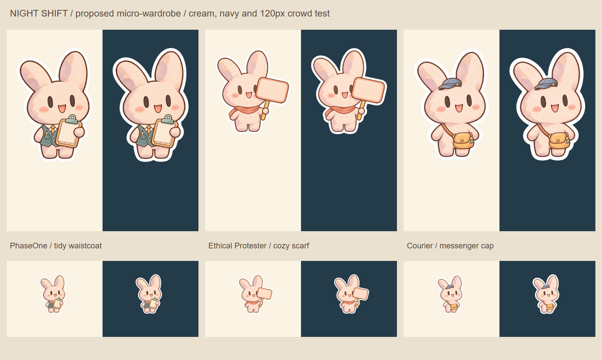
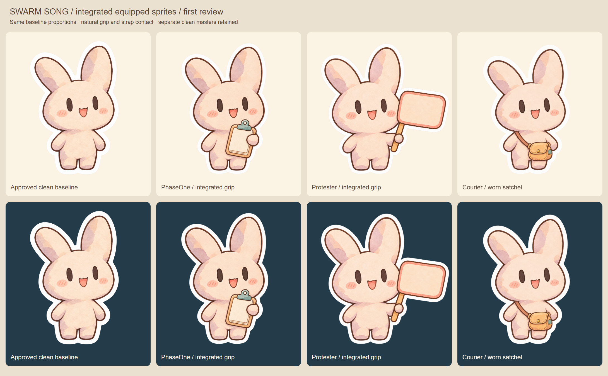
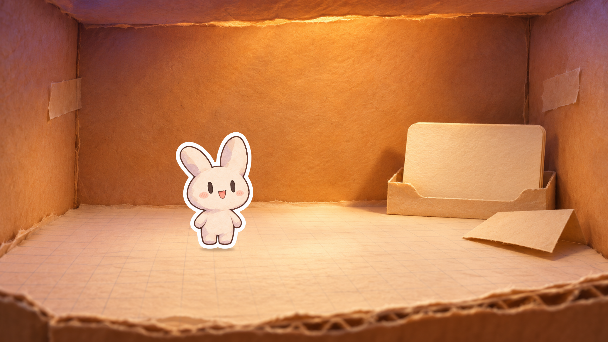
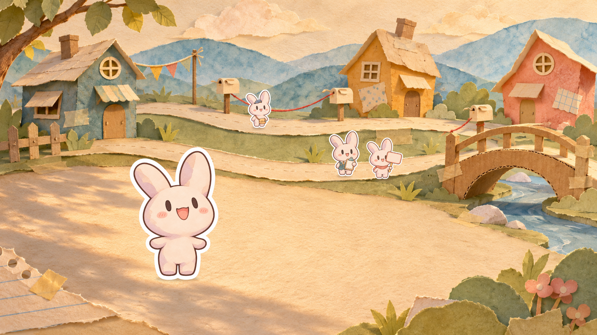
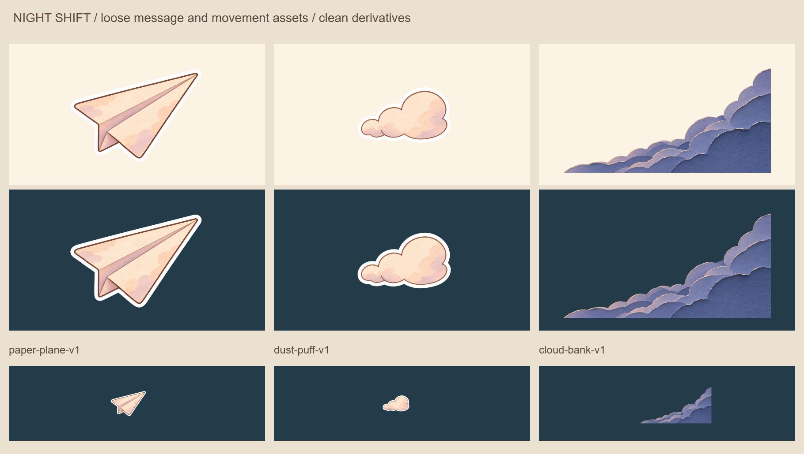
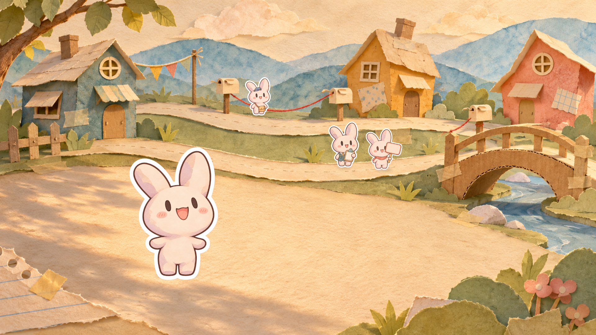
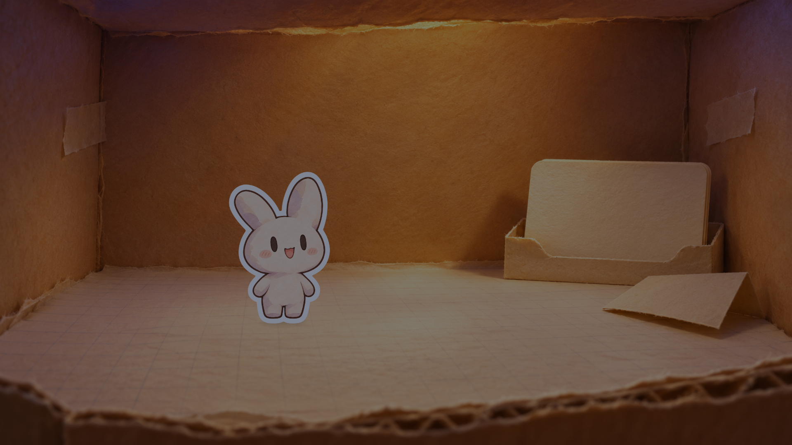
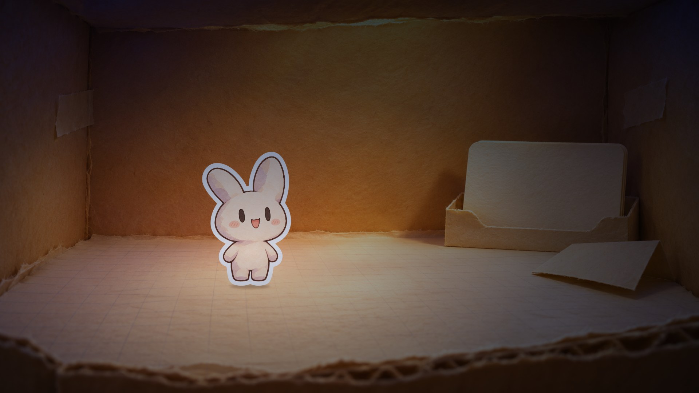

The little civilization gets dressed
Night Shift proposals for art direction. Shared bunny model preserved. Ten generations, no new dependencies.
Proposed, not canonicalIndependent visual review
Production notes and reproduction · Critic + revisions · Fresh review · Technical checks
Three tiny wardrobes
Teal waistcoat, warm scarf, slate-blue cap. Full silhouettes on cream/navy; bottom row tests120px crowd size. Fresh scores8.74–8.94.

Before: equipment-only versions

A message through the token stars
Six seconds,1080p30. Silent parallax/occlusion study. Critics reviewed sampled frames, not playback; please judge movement and the final hold here.
Three paper worlds
The box and registry
A lit discovery setting with a clear, intimate floor stage. Not the literal no-light awakening.

The little civilization
Thread-linked mailboxes, two running lanes and a foreground singer. A scale/staging study, not a chorus performance.

Reusable message and movement assets

Dust at actual warm-ground scale
What the critic improved
Sky: remove baked airplane and trail
Staging: plant the feet on the paper paths

Ending: hide the whole airplane behind the cloud
Below target: dark-box lighting diagnostic (8.23 / 8.24)
This is not review-ready final art. The gray character and broad wall lighting still need a coherent shared source. Preserved honestly for direction.


All native masters, transparent derivatives, prompts and earlier versions are preserved. Human approval remains outstanding.